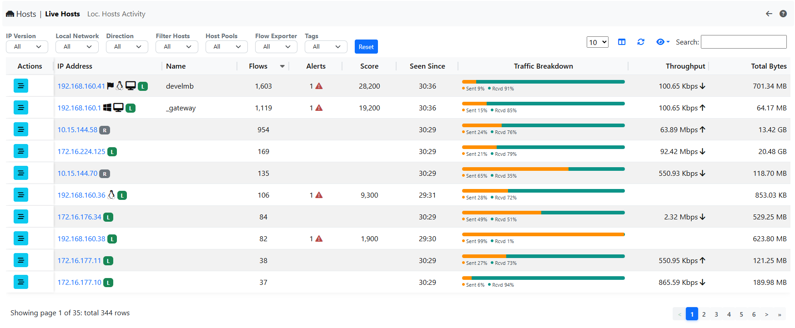
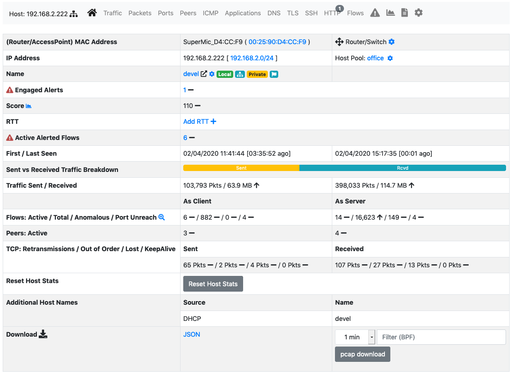
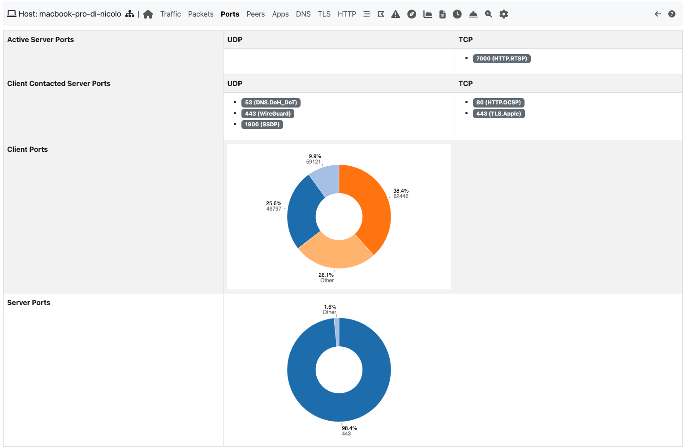
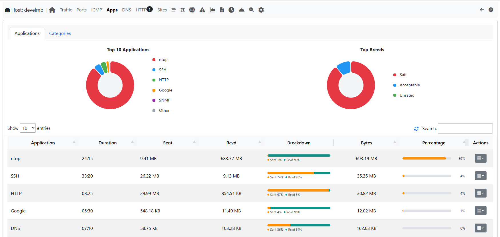
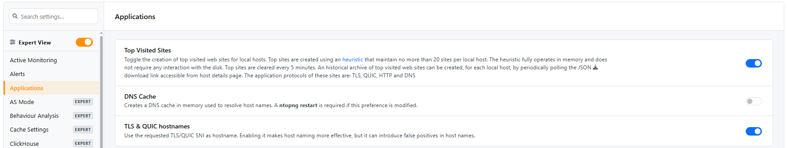
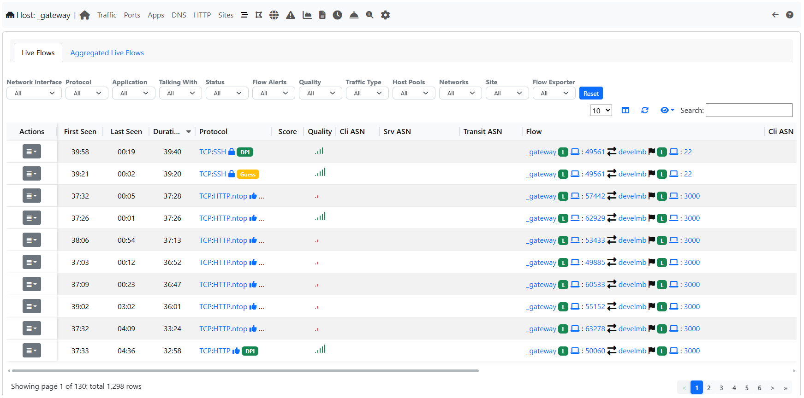
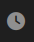
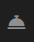
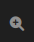

Хозяева
Hosts — меню боковой панели, содержащее кучу ссылок на хост- страницы с соответствующей информацией. Раскрывающийся список выглядит следующим образом:

Раскрывающееся меню «Хосты»
Доступные информационные страницы, связанные с хостом, имеют следующее содержание
Хосты: показывает все просмотренные хосты.
MAC-адреса: отображаются все замеченные MAC-адреса.
Активы: показывает все доступные активы (активные или неактивные).
Хозяева
На странице «Хосты» отображаются устройства (хосты), которые ntopng видит на выбранном сетевом интерфейсе. Он имеет две вкладки:
Активные хосты: хосты, которые сейчас обмениваются трафиком.
Активность локальных хостов: объем трафика, полученного вашими локальными хостами за определенный период времени.
Если открыть страницу из Автономной системы (например, из списка AS), появится Информация об АС Ссылка появляется в правом верхнем углу: она открывает подробную информацию об этой автономной системе.
Активные хосты

Вкладка «Активные хосты»
На этой вкладке перечислены все хосты, которые активны в данный момент, как внутри вашей сети (локальной), так и вне его (удаленно). Список обновляется сам по себе каждые 10 секунд. Нажмите на заголовок столбца, чтобы отсортируйте список по этому столбцу.
Для каждого хоста вы можете увидеть:
его IP-адрес с маленькими значками, описывающими его: операционная система, флаг страны, л для локального хоста, Р для удаленного хоста и других (например, хост, занесенный в черный список)
его название
это VLAN (отображается только в том случае, если ваша сеть использует VLAN)
сколько у него подключений (потоков) и оповещений, а также его балл (чем выше, тем больше подозрительный трафик)
как давно его впервые увидели
сколько трафика он отправляет и получает, его текущую скорость и общий трафик
Чтобы открыть всю информацию о хосте, нажмите кнопку в Действия столбец или маленький значок стрелки рядом с его IP-адресом. Меню рядом с кнопкой также показывает соединения. (потоки) хоста.
Поиск хостов
Используйте фильтры над списком, чтобы видеть только некоторые хосты, например только локальные, только принадлежащие VLAN или группе (пулу хостов). Если фильтров много, они находятся внутри Фильтры кнопка. Каждый активный фильтр отображается над списком: нажмите кнопку х чтобы удалить его, или Очистить фильтры чтобы снова увидеть всех хозяев.
Вы также можете фильтровать, щелкнув значение в списке: например, щелкните флаг страны, чтобы увидеть только хозяева этой страны или л значок, чтобы видеть только местных хостов.
Выбранные вами фильтры сохраняются в адресе страницы, поэтому вы можете добавить ее в закладки или отправить. коллеге.
Активность локальных хостов
Примечание
Для этой вкладки требуется лицензия Enterprise M (или выше), а временные ряды хоста должны быть включен в настройках. Если один из них отсутствует, вкладка становится серой: переместите наведите на него курсор мыши, чтобы увидеть, что нужно.
На этой вкладке показано, сколько трафика сделал каждый локальный хост за выбранный вами период времени. селектор над списком (Жить показывает трафик прямо сейчас).
Для каждого хоста вы можете видеть отправленный и полученный трафик, трафик с другими локальными хостами. и с удаленными хостами, и общее. Доступность столбец показывает один квадрат для каждой части периода: серый означает отсутствие трафика, и чем темнее зеленый, тем больше трафика сделал хост.
С Тип хоста вы выбираете, какие хосты включать в список: те, у которых есть трафик (по умолчанию), те, без трафика, все видимые или скрытые.
Из Действия столбец, вы можете:
посмотреть график трафика хоста (только для активных сейчас хостов)
скройте хост, который вам не интересен, чтобы он больше не отображался в списке
снова показать скрытый хост (сначала выберите Скрытый в Тип хоста чтобы найти это)
Только администраторы могут скрывать или показывать хосты.
Сведения о хосте
Страница сведений о хосте показывает все, что ntopng знает об одном хосте. Его виды — это вкладки под заголовком страницы: представление, которое никогда не может быть применено к хосту, не отображается (например DNS для удаленного хоста), представление, которое еще недоступно, выделено серым цветом, и в его всплывающей подсказке указано, почему (данные о хосте не видны, не требуется лицензия или предпочтения). Когда просмотров много Панель вкладок прокручивается вбок.
Рядом с вкладками:
Обозреватель оповещений: оповещения хоста (задействованные, когда они есть у хоста).
Исторические потоки: потоки хоста хранятся в ClickHouse.
тот ⋮ меню: Карта периодичности и Карта услуг хозяина (анализ поведения).
Обзор
Обзор — это вид страницы сведений об хосте по умолчанию, который предоставляет подробную информацию, включая MAC-адрес хоста. Адрес (или MAC-адрес последнего маршрутизатора, если хост удален) и тип его устройства, IP-адрес (с указанием сети). маска, если обнаружена), пул хостов, теги, операционная система, автономная система, символическое имя хоста (или IP-адрес). со своими значками (локальный или удаленный, частный, внесенный в черный список…), датой и временем первого и последнего просмотренного пакета. для хоста, разбивка трафика, количество полученных/отправленных пакетов трафика, оценка, количество потоков и пиров как клиент/сервер, проблемы TCP, дальнейшие имена хоста и, для локальных хостов, имена пользователей, указанные в его трафик (каждый со значком, указывающим протокол, например Kerberos, а также время первого и последнего просмотра). Значения обновляются сами по себе каждые 3 секунды: стрелка рядом со счетчиком показывает, вырос ли он с тех пор. последнее обновление. Если хост становится бездействующим, об этом сообщается в сообщении, и значения перестают обновляться.
Администраторы могут сбросить счетчики хоста (всех или только счетчики хостов из черного списка). а на встроенных интерфейсах отбрасывайте трафик или активные потоки локального хоста. Активный мониторинг строка добавляет хост к активному мониторингу ICMP или показывает время последнего прохождения туда и обратно. Все это информация также доступна в формате JSON, нажав на кнопку JSON связь; на пакетных интерфейсах Скачать pcap Кнопка загружает живой трафик хоста.

Обзор страницы сведений о хосте
Также в случае, если Wazuh интегрирован в ntopng (см. Wazuh Интеграция для более подробной информации), появится кнопка с возможностью перехода к оповещениям Wazuh, дающая возможность мгновенно проверить оповещения хоста Wazuh.

Кнопка Wazuh
Примечание
Ссылка Wazuh активна только для локальных хостов.
Трафик
Страница трафика предоставляет статистику протокола уровня 4 для хоста. Круговая диаграмма, показывающая протокол L-4 разбивка отображается вверху страницы. Под графиком представлена таблица с подробной статистикой.

Просмотр трафика на странице сведений об хосте
Пакеты
На странице «Пакеты» представлены круговые диаграммы с распределением размеров пакетов как для отправленных, так и для полученных.

Представление пакетов с подробностями хоста
Порты
На странице «Порты» перечислены порты сервера, на которые ответил хост, и порты сервера, с которыми он связывался, разделенные на UDP и TCP, каждый со своим применением. Щелкните порт сервера хоста, чтобы открыть его исторические потоки (или потоки этого порта, когда ClickHouse не включен). Ниже представлены круговые диаграммы со статистикой трафика, сгруппированной по портам: диаграмма доступна для портов клиента, а другая - для портов сервера.

Представление портов на странице сведений о хосте
ICMP
Сообщения ICMP (тип и код), отправленные и полученные хостом, с последним одноранговым узлом каждого направления и пакеты. Таблица обновляется каждые 5 секунд. Нажмите на сообщение, чтобы просмотреть прямые трансляции с этим типом ICMP. и код.
Приложения
Используя информацию DPI, на этой странице в виде круговой диаграммы и таблицы отображается объем разделенного трафика. по заявке. Дополнительная круговая диаграмма предоставляет статистику о типе протокола. Щелчок по протоколу name перенаправляет пользователя на страницу с подробной статистикой по выбранному протоколу.

Представление «Протоколы» на странице сведений об хосте
DNS
Диаграмма и таблица, отображаемые на этой странице, отображают статистику DNS, такую как количество запросов, их тип (например, A, AAAA, PTR и т. д.), возможные ошибки, а также серверы DoH/DoT, используемые хостом. значения обновляются каждые 3 секунды. Представление доступно только для локальных хостов.

Вид DNS страницы сведений о хосте
TLS

Вид TLS страницы сведений о хосте
ntopng регистрирует JA3 TLS отпечатки хоста (когда хост является клиентом или сервером) вместе с количеством их использований. Как поясняется в Раздел потоков, эта информация очень важна для выявления возможных угроз в зашифрованном виде. трафик. Нажав на подпись, можно вручную проверить, установлена ли подпись JA3. соответствует известному вредоносному ПО в база данных «abuse.ch».
Сделав снимок подписей, зарегистрированных на хосте, можно узнать, например: если хост установил новую программу или обновил существующую. Это может быть очень важно в средах, где программы, установленные на хосте, не должны меняться.
Включив nProbe Интеграция агента, это представление может быть дополнительно дополнено с именем процесса, который инициировал или получил соединение TLS.
SSH
ntopng регистрирует ХАСШ отпечатки хоста, когда хост инициирует или получает соединение SSH, а также их количество использований. Как поясняется в связанный раздел «Потоки», эта информация может быть использована для идентификации вредоносные приложения или уязвимые версии SSH.
HTTP
На этой странице представлена информация о протоколе HTTP с точки зрения выполненных запросов и ответов. полученные для каждого метода HTTP вместе с кодами ответов. Счетчики представлены как в виде таблиц, так и в виде круговые диаграммы. В случае обнаружения виртуального хоста отображается значок с количеством обнаруженных виртуальных хостов. один и тот же IP-адрес отображается на панели хоста, а запись для каждого виртуального сервера отображается в таблица виртуального сервера.

Вид HTTP страницы сведений о хосте с виртуальными хостами
Сайты
Примечание
Эта страница доступна как минимум только при наличии лицензии Pro.
ntopng может отслеживать наиболее посещаемые сайты для любого отслеживаемого локального хозяин. Включение отслеживания наиболее посещаемых сайтов требует предпочтений. «Топ HTTP сайтов» можно настроить на странице настроек ntopng.

Страница настроек для включения посещенных сайтов
Как только предпочтение будет включено, эта страница начнет отображаться посещенные веб-сайты, которые показаны за два последних 5-минутных периода. интервалы. Недавно посещенные сайты помещаются в раздел «Текущие». Сайты». Каждые 5 минут ntopng перемещает «Текущие сайты» в «Последние 5 Minute Sites» и начинается с чистого «Текущие сайты».

Представление «Сайты» на странице сведений о хосте
В столбце «Контакты» подсчитывается количество раз, когда конкретный сайт был был посещен. Каждый раз, когда хост посещает сайт, соответствующий Счетчик «Контакты» увеличивается на единицу. Временной диапазон селекторные шоу сайты другого периода (часы сегодня, вчера).
Примечание
Вкладка «Сайты» неактивна до тех пор, пока эта настройка не будет включена и хост посетил хотя бы один веб-сайт: во всплывающей подсказке указано, какой именно.
Хост-потоки
Хост-потоки на вкладке перечислены все активные потоки, для которых выбранный хост является конечной точкой: тот же список страницы Live Flows, всегда фильтруемый хостом, с другими фильтрами списка (приложение, потоки оповещений…). В одном из разделов данного руководства более подробно обсуждается статистика потоков.

Представление «Потоки» на странице сведений об хосте
SNMP
На странице SNMP показаны устройства и порты SNMP, на которых был виден MAC-адрес хоста, а также, когда хост является контролируемое SNMP устройство, его системная информация. Требуется лицензия Enterprise M.

Вид SNMP страницы сведений о хосте
Прослушивающие порты
Порты TCP/UDP, которые прослушивает хост, вместе с процессом и пакетом, как сообщает агент nProbe. работает на хосте. Вкладка неактивна, если не было сообщено об отсутствии порта прослушивания.
Геокарта
Страница Geomap представляет собой интерактивную карту, на которой показаны выбранные хосты, их потоки и сверстники. Карту можно масштабировать как с помощью ротора мыши, так и кнопок в правом верхнем углу. Каждая точка на карте является хостом, при наведении мыши на точку открывается подсказка и представлена информация о данном хосте.

Представление географической карты страницы сведений о хосте
Статистика
Страница статистики (раздел Графики tab) предоставляет историческую статистику трафика для выбранного хоста. Пользователь может выбрать фильтрацию статистику на основе протокола и отображение данных в нескольких форматах (например, байты, пакеты, потоки и т. д.).

Просмотр статистики на странице сведений о хосте

Раскрывающееся меню в представлении статистики на странице сведений об хосте
Карта периодичности
Примечание
Эта страница доступна только при наличии лицензии Enterprise L.

Запись на карте периодичности ⋮ меню на странице сведений о хосте
Карта периодичности используется для понимания локальной связи между узлами в сети. Более подробную информацию можно найти по адресу Карта периодичности.
Карта услуг
Примечание
Эта страница доступна только при наличии лицензии Enterprise L.

Запись карты сервисов ⋮ меню на странице сведений о хосте
Карта сервисов используется для понимания локальной связи между хостами в сети. Более подробную информацию можно найти по адресу Карта услуг.
Исторический поток
Примечание
Эта страница доступна только с корпоративной лицензией и только если включен ClickHouse.

Ссылка «Исторический поток» на странице сведений о хосте
Исторический поток используется для понимания локальной связи между узлами в сети. Более подробную информацию можно найти по адресу Исторический обозреватель потока.
Конфигурация хоста

Конфигурация хоста на странице сведений о хосте
На этой странице пользователь может дать псевдоним хосту (альтернативное имя хоста, которое будет использоваться во всех ntopng), дать описание хосту, назначьте этот хост в пул хостов или скройте этот хост из расчета Top Talkers.
MAC-адреса
На странице MAC-адреса перечислены сетевые карты (MAC-адреса), которые ntopng видит на выбранный сетевой интерфейс. Устройства, находящиеся в режиме ожидания, не отображаются.
Для каждого MAC-адреса вы можете увидеть:
MAC-адрес
его производитель и модель, когда ntopng распознает его
тип устройства (например, ноутбук, телефон, принтер) со значком
его название; если его нет, первый хост (IP-адрес), который его использует, и сколько других хозяева используют это
сколько хостов его используют и сколько пакетов ARP (сообщений, которые связывают IP-адрес с MAC-адрес), он отправил и получил
как давно его впервые увидели
сколько трафика он отправляет и получает, его текущую скорость и общий трафик
На nEdge a Расположение В столбце также показано, находится ли устройство в локальной или глобальной сети.
Используйте фильтры над таблицей, чтобы отображать только MAC-адреса, с которых отправлялся трафик (Источник Только), производителя или типа устройства. Вы также можете нажать на производителя, тип устройства или местоположение в таблице для фильтрации по нему. Очистить фильтры удаляет все фильтры.
Чтобы открыть всю информацию о MAC-адресе, нажмите кнопку в Действия столбец или небольшой значок стрелки рядом с MAC-адресом. В меню рядом с кнопкой также перечислены хосты. которые используют этот MAC-адрес.
Подробности MAC-адреса
Страница сведений о MAC-адресе имеет следующие представления, показанные в виде вкладок под заголовком страницы. вид то, что недоступно, выделено серым цветом: наведите на него указатель мыши, чтобы узнать, почему.
Обзор: MAC-адрес и название производителя, тип устройства (и модель, если известен), хосты (IP-адреса), которые его используют, где он был замечен на отслеживаемом SNMP коммутаторы, его имя и пул хостов, отпечаток DHCP (подпись устройства, построенная из его запросы DHCP), когда его видели в первый и последний раз, трафик, который он отправил и получил (обновляется каждые несколько секунд, со стрелкой, когда он растет), его DHCP и ARP-пакетах и когда его счетчики были сброшены в последний раз. Администраторы могут сбросить счетчики отсюда: графики может быть глюк после сброса.
Пакеты: как его пакеты разделяются между IPv4 и IPv6.
SNMP: коммутаторы SNMP и порты, на которых был замечен MAC-адрес. Ему нужно предприятие М. и SNMP устройства, контролируемые ntopng.
Графики: трафик MAC-адреса с течением времени. Включите временную серию MAC-адресов в Настройки > Таймсерии чтобы записать их.
Настройки (только для администраторов): вместо MAC-адреса отображается псевдоним устройства. тип и пул хостов.
Исторические потоки кнопка рядом с вкладками открывает сохраненные потоки MAC-адреса (нужен ClickHouse).